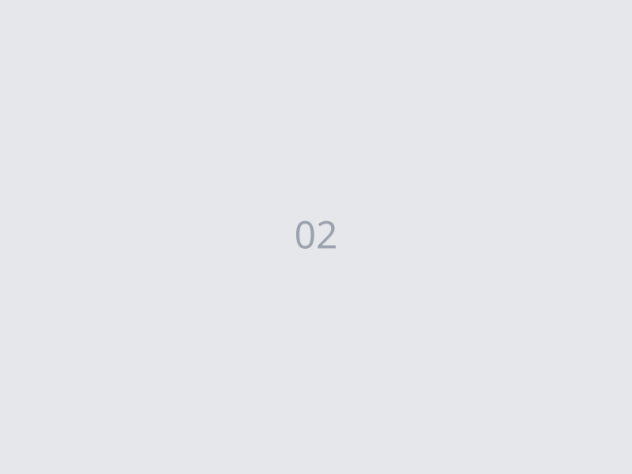
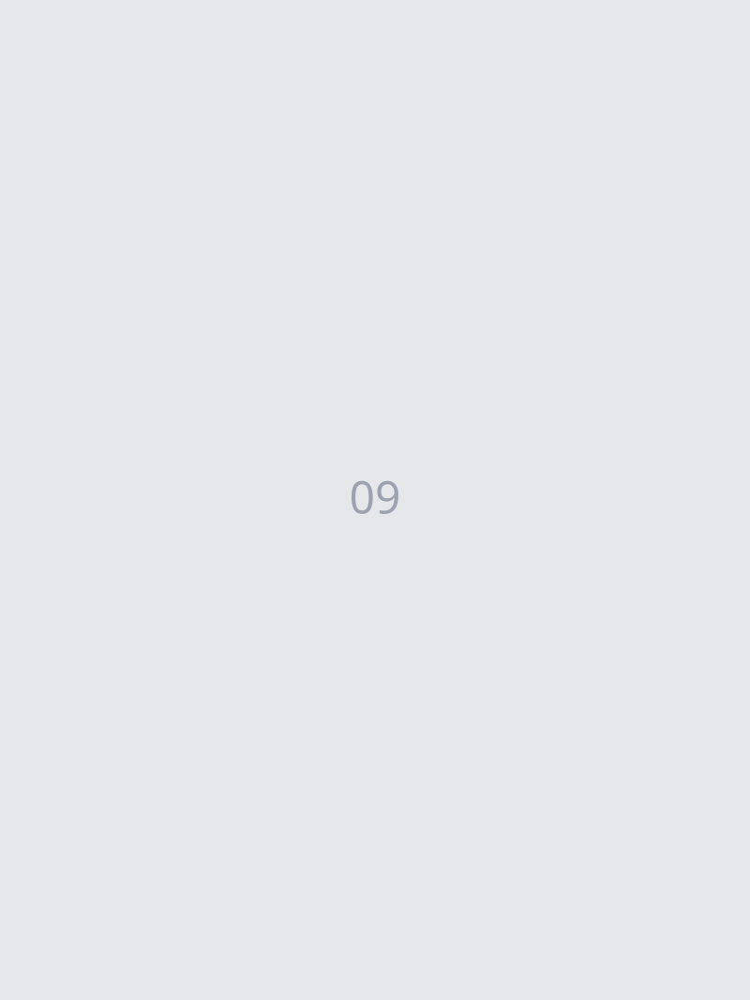

Eine kurze Einführung in meine Arbeitsweise und meine Leidenschaft.
Video wird in Kürze verfügbar
Alle Bilder entstanden im Rahmen von ehrenamtlichen und hauptamtlichen Tätigkeiten der letzten 10 Jahre und waren keine Aufträge.



Ich bin Paul – seit über 10 Jahren leidenschaftlich hinter der Kamera.
Ein Mensch, der Begegnungen liebt.
Ich erzähle deine Geschichte.
Die echte. Die authentische. Die ehrliche.
Nicht die perfekte. Nicht die inszenierte.
Bilder, die deine Sprache sprechen.
So wie du bist.
Kein Studio. Kein künstliches Licht. Keine Anweisungen wie: "Stell dich da hin. Lächel mal."
Wir lernen uns kennen. Telefon oder Video. Ich höre zu, was dir wichtig ist. Keine Standardfragen.
Draußen. Im echten Leben. Wir finden einen Ort, der zu dir passt. Goldene Stunde, wenn möglich.
45–60 Minuten. Erst warmwerden, dann Flow. Ich dirigiere, aber du posierst nicht. Du bist einfach da.
Du siehst alle Bilder als Preview. Wir wählen die besten aus. Farbkorrektur, leichte Retusche – keine Körperveränderung.
Digitale Galerie, 2–3 Tage später. Die Bilder gehören dir. Für immer.
Fünf Wege, deine Geschichte zu erzählen. Immer ehrlich. Immer du.
Kein Fotostudio. Keine aufgesetzte Pose. Nur du – so wie du bist. Ich lerne dich vorher kennen und gemeinsam suchen wir den Ort, der sich für dich richtig anfühlt.
Bevor ich auch nur eine einzige Aufnahme mache, will ich eure Geschichte kennen. Wie habt ihr euch kennengelernt? Was war der Moment, wo ihr wusstet – das ist es? Erst dann gehen wir raus. Und dann entstehen Bilder, die sich anfühlen wie ihr – in einem echten Moment.
Du engagierst dich. Du baust etwas auf. Du setzt dich ein – für deine Gemeinde, dein Unternehmen, deine Überzeugung. Ich begleite dich bei dem, was du tust, und mache Bilder, die zeigen, wer du bist und wofür du stehst. Kein Anzugfoto vor weißer Wand. Sondern du – mitten in deiner Welt.
Einfach mal anfangen, sich zu zeigen. 30 Minuten, ein Ort, 5 bearbeitete Bilder. Kein Aufwand, kein Stress – nur du.
Veranstaltungen, dokumentarische Begleitungen oder besondere Ideen, die in keine Schublade passen. Lass uns einfach reden.
Jetzt anfragenGemäß § 19 UStG wird keine Umsatzsteuer berechnet.
Bereit für dein Shooting? Oder erstmal Fragen? Schreib mir.
So wie du bist –
ist es richtig und gut so.
ist es richtig und gut so.